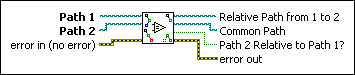

Compare Two Paths VI
Owning Palette: Advanced File VIs and Functions
Requires: Base Development System
Compares Path 1 to Path 2 and returns a relative path between the two paths, the common path between the two paths, and a Boolean that indicates whether the paths are on the same path hierarchy level.
For example, if Path 1 is C:\folder\sub\test.txt and Path 2 is C:\folder\sub2\dir\test2.doc, Relative Path from 1 to 2 returns ..\..\sub2\dir\test2.doc. Common Path returns C:\folder, and Path 2 Relative to Path 1 returns FALSE because you have to go up two levels in the path hierarchy to get to the common path between Path 1 and Path 2.

 Add to the block diagram Add to the block diagram |
 Find on the palette Find on the palette |